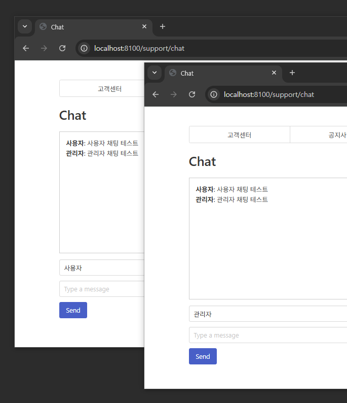
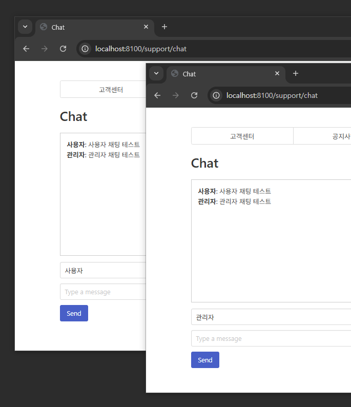

초보 개발자 최찬우입니다.
웹 개발이라는 분야에 처음 도전할 때는
‘내가 잘할 수 있을까?’라는 두려움이 솔직히 더 컸습니다.
하지만 공부를 이어가며 새로운 기술을 습득하는 흥미,
그리고 그것을 직접 구현해보는 재미 덕분에
이제는 그 두려움조차 저를 앞으로 나아가게 하는 원동력이 되었습니다.
저는 단순히 ‘보여지는 것’에서 멈추지 않고,
‘이건 어떤 원리로 작동하지?’
‘더 효율적인 방법은 없을까?’
라는 호기심에서 출발해 Spring Boot와 Django 등 다양한 백엔드 기술을 깊이 있게 공부하고 있습니다.
실무에 바로 적용할 수 있는 효율적인 구조,
그리고 사용자가 더 쾌적하게 느낄 수 있는 서비스 경험을 위해
꾸준히 고민하고 성장하고자 노력합니다.
Git이나 Docker, AWS 같은 DevOps 도구도 적극적으로 활용하고 있고,
최근에는 React와 OpenAI API 등 프론트엔드와 AI 기술도 배우며
개발자의 시야를 넓혀가고 있습니다.
저는 이런 개발자가 되고 싶어요
- 원리를 이해하고, 더 좋은 구조를 고민하는 개발자
- 새로운 기술에 도전하며, 두려움을 원동력으로 삼는 개발자
- 사용자 경험을 생각하며, 협업과 소통을 중요하게 여기는 개발자
아모레퍼시픽 채팅방 구현
SpringBoot의 WebSocket을 이용한
관리자와 사용자의 1:1 채팅방을 구현했습니다.
BackEnd
FrontEnd
 

아모레퍼시픽 채팅방 구현
SpringBoot의 WebSocket을 이용한
관리자와 사용자의 1:1 채팅방을 구현했습니다.
BackEnd
FrontEnd